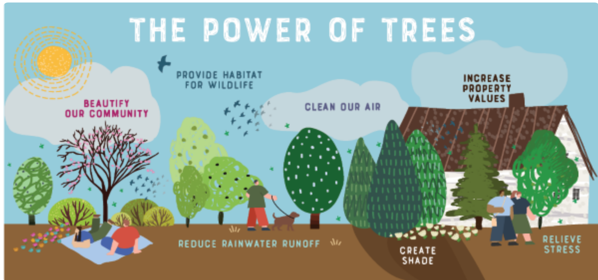
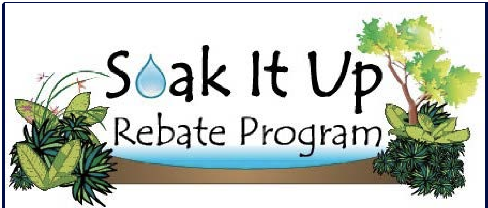
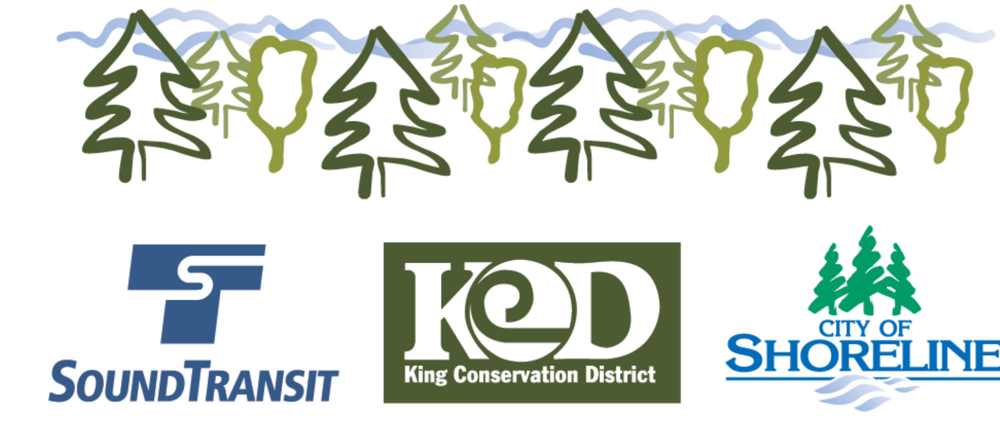
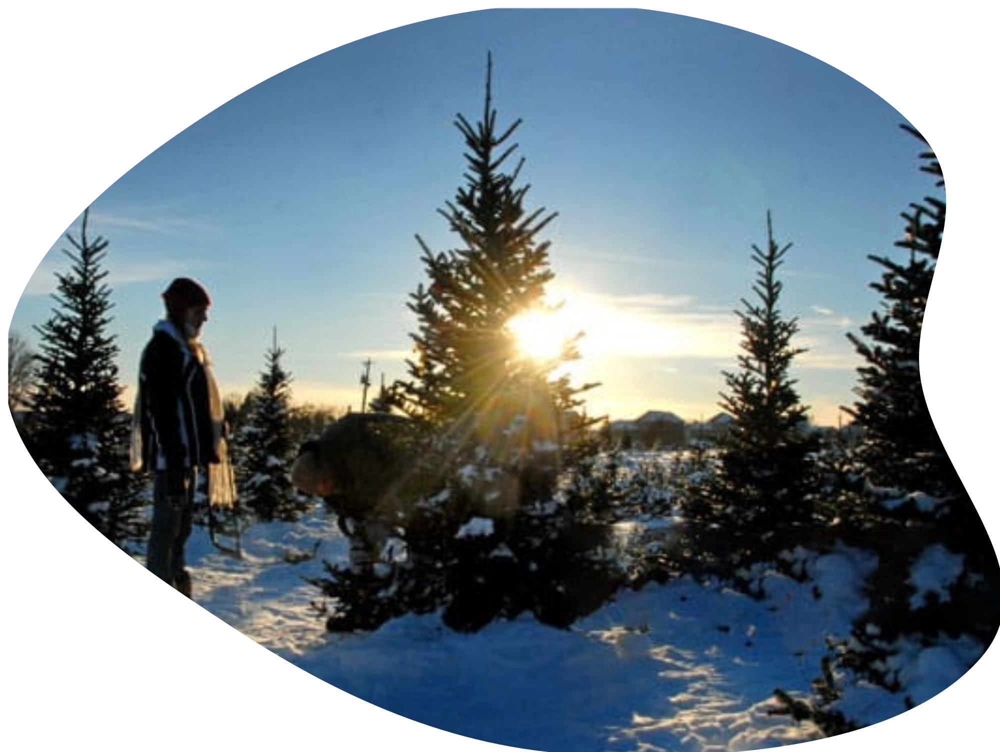

Free Gardening Resources

If you're a resident of Shoreline, Washington, and you're interested in starting your own garden, you're in luck! Shoreline offers a variety of free gardening resources and programs to help you beautify your outdoor space while contributing to a more sustainable and vibrant community.
Gardening can be economical if a person has the patience to wait for a good deal on resources, or has the creativity to repurpose used materials. One thing about the community gardening culture of Shoreline is that you are encouraged to express your creativity and uniqueness, it is what makes our community thrive!
Below are a list of available cost resources and tips for stretching your dollar when it comes to climate-proofing your garden.
The Shoreline Communi-Tree Program is a fantastic initiative that allows Shoreline residents to enhance their neighborhoods by planting trees. Trees not only beautify the landscape but also improve air quality and provide habitat for wildlife. By participating in this program, you can receive free trees for planting in your yard.
2. Soak-It-Up Rain Gardens Rebate Program
Shoreline is committed to sustainable water management, and the Soak-It-Up Rain Gardens Rebate Program is a testament to that commitment. This program encourages residents to create rain gardens that help manage stormwater and prevent pollution in local water bodies. By participating, you can receive rebates for implementing rain gardens on your property.
Shoreline residents living near the Sound Transit Light Rail construction zone can take advantage of the King Conservation District Trees for Rail Program. This initiative provides free trees to residents to help mitigate the environmental impact of rail construction. Participating in this program not only benefits your property but also contributes to the restoration of green spaces.
4. US Forest Service Annual Christmas Tree Permit Program
While not specifically a gardening program, the United States Forest Service Christmas Tree Permit offers a unique opportunity for Shoreline residents. During the winter months, you can obtain a permit to dig up a free Christmas tree in national parks and national forests. This tradition allows you to bring a touch of the outdoors into your home. We recommend replanting your tree in your yard after the holiday season to continue the cycle of growth and sustainability.
5. Free or Second-Hand Gardening Items
In addition to these programs, you can explore online platforms such as Nextdoor, OfferUp, and Facebook Marketplace to find free or second-hand gardening items. Many Shoreline residents offer excess dirt from excavation projects, free rocks and pavers, and even plants they no longer want. These resources can be a valuable addition to your gardening endeavors and a great way to connect with your neighbors.
With these free gardening resources and programs, you can transform your outdoor space into a beautiful and sustainable garden. Whether you're interested in planting trees, creating rain gardens, or simply finding free gardening materials, Shoreline has something to offer for every green thumb. Happy gardening!